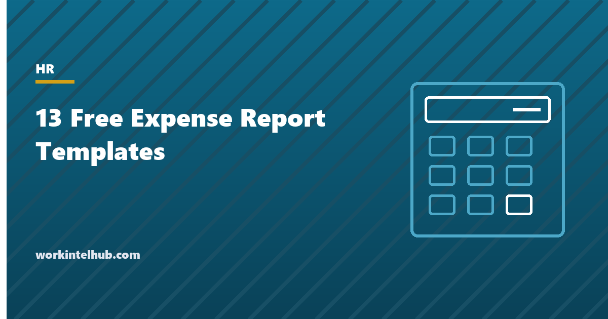

13 Free Expense Report Templates

An expense report is the document that turns money an employee spent into money the company reimburses, and it is also the record that decides whether that reimbursement is taxable. Under the IRS accountable plan rules, an expense must have a business purpose, be substantiated with the date, place, amount and purpose (and a receipt above the policy threshold) within a reasonable time, and any advance must be returned. A report that captures those things keeps reimbursements out of wages; one that does not makes them taxable.
Thirteen formats are here because expenses come in kinds: a basic report, an itemised report by category, a travel report, a mileage log, a per diem report, a monthly report, a project report, a team report, a credit card reconciliation, a contractor expense claim, an event report, a petty cash log and an advance reconciliation. Excel totals and categorises; Word and PDF print for signature. The expense reimbursement policy sets the rules the reports apply.
Download the templates
Free files: Word, Excel and PDF
Three files, free, no email required. Word to edit, Excel to track, PDF to print or share.
Templates open in Microsoft Word, Excel, Google Docs and Sheets, LibreOffice and any PDF reader. Free to use and adapt for your organisation.
The thirteen templates
| Template | Use it when |
|---|---|
| Basic | One trip or one purchase, few lines |
| Itemised | Several expenses across categories; the default |
| Travel | A trip with daily costs |
| Mileage log | Personal vehicle used for business |
| Per diem | Meals and lodging at GSA rates instead of receipts |
| Monthly | Regular small expenses, such as a remote worker's phone and internet |
| Project | Expenses charged to a project or billed to a client |
| Team | A manager approving a team's expenses in one place |
| Credit card reconciliation | Company card statements against receipts |
| Contractor claim | Contractors billing expenses permitted by their contract |
| Event | Budget against actual for an event |
| Petty cash | A cash float with a running balance |
| Advance reconciliation | Cash advances, with the 120-day return check |
The rules every report applies
The IRS accountable plan has three conditions: a business connection, substantiation within a reasonable period (60 days under the safe harbour), and return of any excess advance (120 days). Substantiation means the amount, date, place and business purpose, with receipts for lodging at any amount and for other expenses of $75 or more under federal rules; most company policies set a lower threshold, commonly $25. Mileage is reimbursed at the IRS standard rate, 72.5 cents to June 30, 2026 and 76 cents from July 1, and the log must show date, destination, purpose and miles. Per diem can replace meal receipts at the GSA rate for the location, with 75 percent on the first and last day of travel.
The reports carry a business purpose column because it is the field auditors check and employees leave blank. "Lunch" is not a purpose; "lunch with Acme procurement team, contract renewal" is.
From report to reimbursement
- Submit within the policy deadline, usually 30 days, with receipts attached or photographed.
- Manager approves for business purpose and policy compliance; finance reviews for substantiation.
- Pay through payroll or accounts payable within the policy period, separately identified from wages.
- Personal charges on a company card are repaid, not netted silently.
- Advances are reconciled on the advance sheet and excess returned within 120 days, or the excess becomes wages.
- Keep reports and receipts for at least four years, which covers the IRS period and most state wage claims.
State laws that go further
Eleven states and the District of Columbia require employers to reimburse necessary business expenses whether or not a policy says so, and California, Illinois and others have applied this to remote workers' phone and internet costs. The monthly report exists for that: a regular, documented claim for the business share of personal costs, or a stipend that the policy explains. The reimbursement policy generator writes the policy, and the travel policy sets the limits the travel report applies.
Key takeaways
- An expense report substantiates the amount, date, place and purpose so reimbursement stays out of wages under the accountable plan rules.
- Use the format that fits the expense: itemised by default, travel, mileage, per diem, monthly, project, card, petty cash or advance.
- Mileage at 72.5 cents to June 30, 2026 and 76 cents after; per diem at GSA rates with 75 percent on travel days.
- Business purpose is the field auditors check; make it mandatory.
Frequently asked questions
What should an expense report include?
Employee, period and purpose; for each expense the date, vendor, description, business purpose, category, amount and whether a receipt is attached; totals by category; any advance deducted; the amount due; and the employee's and approver's signatures. Mileage adds from, to, purpose, miles and the rate.
When are receipts required?
Under federal rules, for lodging at any amount and for other expenses of $75 or more. Most company policies require receipts above $25. Per diem replaces meal receipts where the policy uses GSA rates. Keep receipts with the report for at least four years.
What is the mileage rate for 2026?
The IRS standard business mileage rate is 72.5 cents per mile for travel from January 1 to June 30, 2026 and 76 cents per mile from July 1, 2026. The mileage log in the download applies the rate by date. Employers may reimburse at a different rate; reimbursement above the standard rate is taxable.
Are expense reimbursements taxable?
Not if paid under an accountable plan: business purpose, substantiation within a reasonable time, and return of excess advances. Reimbursements without substantiation, or advances not returned within 120 days, are wages subject to tax and withholding.
How long does an employee have to submit expenses?
Company policies usually set 30 to 60 days; the IRS safe harbour treats 60 days as reasonable for substantiation. Late reports may still be reimbursed but the employer loses the safe harbour and should document the reason.